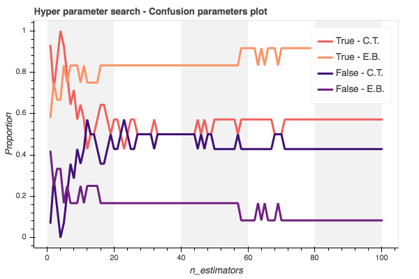
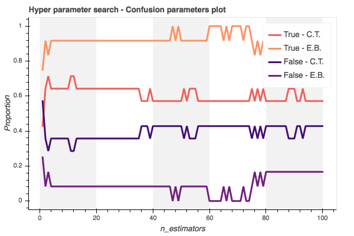
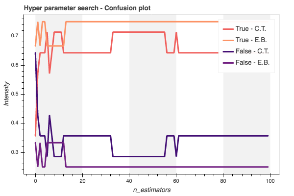

XGBoost Classifier¶
The first algorithm that we will use is the XGBoost with its classic classifier. This is the classic simple algorithm from XGBoost library, further a more complex one will be used. This algorithm will be used for each generated feature, namelly:
Periodograms
Bayes Similarity
Hidden Markov Models
All approaches will pass trough the common machine learning pipeline, where we must:
Normalize the data (if necessary)
Divide the data between trainning and testing
Search the hyper parameters
Cross validate the models
Analyse the results
Periodograms¶
The application using the periodograms is actually pretty simple, now that the data is prepared and all of those preprocessing from last pipeline step is already done. The algorithm became straigh forward. First it is necessary to read the features generated.
[1]:
import pickle
file_name = './features/freq_data/freq_data.pkl'
with open(file_name, 'rb') as file:
freq_data = pickle.load(file)
freq_data.keys()
[1]:
dict_keys(['features', 'labels'])
Manipulate features¶
After reading the data, it is necessary to create the classical regression structure model in the format \(Y = f\left(\Theta, X\right)\), normalize the feature data and encode any possible label data into numerical classes. This is just the preparation for the machine leaning algorithm to guarantee that the provided info is properlly designed for any machine learning classical form.
[2]:
import numpy as np
from sklearn import preprocessing
# Create the label encoder
le_freq = preprocessing.LabelEncoder()
le_freq.fit(freq_data['labels'])
# Define the regression model
regressors = preprocessing.normalize(freq_data['features']['spec'])
outputs = le_freq.transform(freq_data['labels'])
[3]:
regressors.shape[1]
[3]:
12758
Also it is interesting to reduce the features dimension to build a simpler model. It is not necessary to create a classifier with such amount (12758 features…) of features. There are several techniques that can be used to reduce the features dimensions. The Principal Component Analisys, is very effective when dealing with high dimensional data. Here the PCA algorithm from the sklearn library is used.
[4]:
from sklearn.decomposition import PCA
# Create the PCA decomposer
pca_dec = PCA(n_components=70, svd_solver='arpack')
# Train the PCA object
pca_dec.fit(regressors)
# Transform the data using
# the PCA model
pca_regressor = pca_dec.transform(regressors)
Train-test data split¶
Next it is necessary to segregate the data into a set for validation and one for trainning the model.
[5]:
from sklearn.model_selection import train_test_split
X_train, X_test, y_train, y_test = train_test_split(
pca_regressor, outputs, test_size=0.33, random_state=42)
Hyper tunning¶
We could consider tunning the model hyper parameters to answer questions such as:
Wich value of
n_estimatorsis the best for this model and data?Wich cost function is the best to be selected as
objectivefor this model?
We could do a hyper search, to find the best hyper parameters for this model, automating the hyper parameter selection. There are several already builded algorithms to optimize this parameter search, and build find with high performance the best parameters, provided a set of possible values. But, to understand what those algorithms actually does, we could once build our own search algorithm…
As an example, lets run a first handly defined hyper parameter tunning using the confusion matrix of the model:
[6]:
import xgboost as xgb
from sklearn.metrics import confusion_matrix
# Define the model parameters
param_dist = {
'objective':'binary:logistic',
'n_estimators' : 11
}
# Create the range parameters to
# search
n_estimators = [ k+1 for k in range(100)]
# Create the plotting variable
plot_vals = {
'true': {
'confirmed targets': [],
'eclipsing binaries': [],
},
'false': {
'confirmed targets': [],
'eclipsing binaries': [],
}
}
# Estimate and validate each candidate
for opt in n_estimators:
# Update the model parameters
param_dist['n_estimators'] = opt
# Create the xgBoost classifier
clfs = xgb.XGBClassifier(**param_dist)
# Fit the model to the data
clfs.fit(X_train, y_train,
eval_metric='logloss',
verbose=True)
# Estimate the test output
y_pred = clfs.predict(X_test)
# Compute the confusion matrix
conf_mat = confusion_matrix(
y_test, y_pred,
normalize='true')
# Save the confusion matrix
plot_vals['true']['confirmed targets'].append(conf_mat[0,0])
plot_vals['true']['eclipsing binaries'].append(conf_mat[1,1])
plot_vals['false']['confirmed targets'].append(conf_mat[0,1])
plot_vals['false']['eclipsing binaries'].append(conf_mat[1,0])
[7]:
from utils import *
# Line plot each confidence matrix parameter
x_data = [n_estimators, n_estimators, n_estimators, n_estimators]
y_data = [plot_vals['true']['confirmed targets'],
plot_vals['true']['eclipsing binaries'],
plot_vals['false']['confirmed targets'],
plot_vals['false']['eclipsing binaries']]
legends= ['True - C.T.', 'True - E.B.', 'False - C.T.', 'False - E.B.']
colors = [6, 7, 2, 3]
p = visual.multline_plot(x_data, y_data,
legend_label=legends,
title='Hyper parameter search - Confusion parameters plot',
color_index=colors,
y_axis={'label': 'Proportion'},
x_axis={'label': 'n_estimators'})
visual.show_plot(p)

Train model¶
After running the hyper parameter search we can create a model with the best defined hyper parameters, or setup parameters, and consolidate the model in to the best version for further performance analysis. The model is saved on a particular variable, such as freq_clf to be further used in some vote chain model, if further necessary.
One interesting result from the above result, is that the best compromise result happens at the :math:`n_x = 5` not on :math:`n_x=4` as it seems. Even though for the :math:`n_x=4` the algorithm is able to get all the exo planets, the compromise on having a confidence of only 66% for the eclipsing binaries classification (classifier close to a coin flipper to classify eclipsing binaries), doesn’t allow us to select :math:`n_x=4`. Therefore the best trade-off on both classes happens at :math:`n_x=5`.
[8]:
# XGBoost Classifier model parameters
param_dist = {
'verbosity': 0,
'objective':'binary:logistic',
'n_estimators' : 5
}
# Create the model classifier
freq_clf = xgb.XGBClassifier(**param_dist)
# Train the model
freq_clf.fit(X_train, y_train,
eval_set=[
(X_train, y_train),
(X_test, y_test)
],
eval_metric='logloss',
verbose=False)
[8]:
XGBClassifier(base_score=0.5, booster=None, colsample_bylevel=1,
colsample_bynode=1, colsample_bytree=1, gamma=0, gpu_id=-1,
importance_type='gain', interaction_constraints=None,
learning_rate=0.300000012, max_delta_step=0, max_depth=6,
min_child_weight=1, missing=nan, monotone_constraints=None,
n_estimators=5, n_jobs=0, num_parallel_tree=1,
objective='binary:logistic', random_state=0, reg_alpha=0,
reg_lambda=1, scale_pos_weight=1, subsample=1, tree_method=None,
validate_parameters=False, verbosity=0)
Results¶
In this part it is presented the results from the classification algorithm. Both regarding the data visualization and the model classification quality.
[9]:
import pprint
pp = pprint.PrettyPrinter(indent=2)
pp.pprint(freq_clf.evals_result())
{ 'validation_0': { 'logloss': [ 0.537111,
0.449156,
0.384568,
0.327504,
0.280901]},
'validation_1': { 'logloss': [ 0.609796,
0.574501,
0.546393,
0.504637,
0.509942]}}
[10]:
import matplotlib.pyplot as plt
from sklearn.metrics import plot_confusion_matrix
disp = plot_confusion_matrix(freq_clf, X_test, y_test,
display_labels=le_freq.classes_,
cmap=plt.cm.Blues,
normalize='true')
disp.ax_.set_title('Periodogram Classifier - Confusion matrix')
plt.show()
Comments¶
From this results it is possible to see that the classifier using periodogram amplitudes can get some interesting knowledge on the eclipsing binaries classification, and have an even better results for the exo planets (confirmed target labels). Also the results are not just good considering the classification capability, but also considering the robustness of the algorithm. The robustness quality can be checked from the printed loss, which shows a continous descending loss for both the test and train data.
Naive Bayes likelihood¶
Here we will read the Naive Bayes model parameters estimated for each light curve and use this information as feature for the xgBoost classifier. To start this approach, we must first read the Bayes features saved from last step:
[11]:
import pickle
file_name = './features/bayes_data/nx_6/bayes_data.pkl'
with open(file_name, 'rb') as file:
bayes_data = pickle.load(file)
bayes_data.keys()
[11]:
dict_keys(['features', 'labels'])
Manipulate features¶
After reading the data, it is necessary to create the classical regression structure model in the format \(Y = f\left(\Theta, X\right)\), normalize the feature data and encode any possible label data into numerical classes. This is just the preparation for the machine leaning algorithm to guarantee that the provided info is properlly designed for any machine learning classical form.
[12]:
import numpy as np
from sklearn import preprocessing
# Create the label encoder
le_bayes = preprocessing.LabelEncoder()
le_bayes.fit(bayes_data['labels'])
# Define the regression model
regressors = preprocessing.normalize(bayes_data['features']['params'])
outputs = le_bayes.transform(bayes_data['labels'])
Train-test data split¶
Next it is necessary to segregate the data into a set for validation and one for trainning the model.
[13]:
from sklearn.model_selection import train_test_split
X_train, X_test, y_train, y_test = train_test_split(
regressors, outputs, test_size=0.33, random_state=42)
Hyper tunning¶
We could consider tunning the model hyper parameters to answer questions such as:
Wich value of
n_estimatorsis the best for this model and data?Wich cost function is the best to be selected as
objectivefor this model?
We could do a hyper search, to find the best hyper parameters for this model, automating the hyper parameter selection. There are several already builded algorithms to optimize this parameter search, and build find with high performance the best parameters, provided a set of possible values. But, to understand what those algorithms actually does, we could once build our own search algorithm…
As an example, lets run a first handly defined hyper parameter tunning using the confusion matrix of the model:
[14]:
import xgboost as xgb
from sklearn.metrics import confusion_matrix
# Define the model parameters
param_dist = {
'objective':'binary:logistic',
'n_estimators' : 11
}
# Create the range parameters to
# search
n_estimators = [ k+1 for k in range(100)]
# Create the plotting variable
plot_vals = {
'true': {
'confirmed targets': [],
'eclipsing binaries': [],
},
'false': {
'confirmed targets': [],
'eclipsing binaries': [],
}
}
# Estimate and validate each candidate
for opt in n_estimators:
# Update the model parameters
param_dist['n_estimators'] = opt
# Create the xgBoost classifier
clfs = xgb.XGBClassifier(**param_dist)
# Fit the model to the data
clfs.fit(X_train, y_train,
eval_metric='logloss',
verbose=True)
# Estimate the test output
y_pred = clfs.predict(X_test)
# Compute the confusion matrix
conf_mat = confusion_matrix(
y_test, y_pred,
normalize='true')
# Save the confusion matrix
plot_vals['true']['confirmed targets'].append(conf_mat[0,0])
plot_vals['true']['eclipsing binaries'].append(conf_mat[1,1])
plot_vals['false']['confirmed targets'].append(conf_mat[0,1])
plot_vals['false']['eclipsing binaries'].append(conf_mat[1,0])
[15]:
from utils import *
# Line plot each confidence matrix parameter
x_data = [n_estimators, n_estimators, n_estimators, n_estimators]
y_data = [plot_vals['true']['confirmed targets'],
plot_vals['true']['eclipsing binaries'],
plot_vals['false']['confirmed targets'],
plot_vals['false']['eclipsing binaries']]
legends= ['True - C.T.', 'True - E.B.', 'False - C.T.', 'False - E.B.']
colors = [6, 7, 2, 3]
p = visual.multline_plot(x_data, y_data,
legend_label=legends,
title='Hyper parameter search - Confusion parameters plot',
color_index=colors,
y_axis={'label': 'Proportion'},
x_axis={'label': 'n_estimators'})
visual.show_plot(p)

Train model¶
After running the hyper parameter search we can create a model with the best defined hyper parameters, or setup parameters, and consolidate the model in to the best version for further performance analysis. The model is saved on a particular variable, such as bayes_clf to be further used in some vote chain model, if further necessary.
[16]:
# XGBoost Classifier model parameters
param_dist = {
'verbosity': 0,
'objective':'binary:logistic',
'n_estimators' : 11
}
# Create the model classifier
bayes_clf = xgb.XGBClassifier(**param_dist)
# Train the model
bayes_clf.fit(X_train, y_train,
eval_set=[
(X_train, y_train),
(X_test, y_test)
],
eval_metric='logloss',
verbose=False)
[16]:
XGBClassifier(base_score=0.5, booster=None, colsample_bylevel=1,
colsample_bynode=1, colsample_bytree=1, gamma=0, gpu_id=-1,
importance_type='gain', interaction_constraints=None,
learning_rate=0.300000012, max_delta_step=0, max_depth=6,
min_child_weight=1, missing=nan, monotone_constraints=None,
n_estimators=11, n_jobs=0, num_parallel_tree=1,
objective='binary:logistic', random_state=0, reg_alpha=0,
reg_lambda=1, scale_pos_weight=1, subsample=1, tree_method=None,
validate_parameters=False, verbosity=0)
Results¶
In this part it is presented the results from the classification algorithm. Both regarding the data visualization and the model classification quality.
[17]:
import pprint
pp = pprint.PrettyPrinter(indent=2)
pp.pprint(bayes_clf.evals_result())
{ 'validation_0': { 'logloss': [ 0.567346,
0.456689,
0.383979,
0.341458,
0.312702,
0.277829,
0.251812,
0.232627,
0.216223,
0.202809,
0.194951]},
'validation_1': { 'logloss': [ 0.657235,
0.599724,
0.567681,
0.561523,
0.556633,
0.547125,
0.553211,
0.528883,
0.531398,
0.528597,
0.536761]}}
[18]:
import matplotlib.pyplot as plt
from sklearn.metrics import plot_confusion_matrix
disp = plot_confusion_matrix(bayes_clf, X_test, y_test,
display_labels=le_bayes.classes_,
cmap=plt.cm.Blues,
normalize='true')
disp.ax_.set_title('Bayes Classifier - Confusion matrix')
plt.show()
Comments¶
From this results it is possible to see that the classifier using Naive Bayes estimated model parameters is able to highly characterize the eclipsing binaries, and has acceptable classification performance for the confirmed targets. Also, the algorithm, as in the approach using the Periodograms, is highly consistent, due to the continuous descending loss during learning process for both the trainning and testing data. But comparing with the Periodogram approach, we can ensure that this one is much more simpler, considering the data preprocessing, than the one using the Periodograms. To generate the periodograms, several artesanal filtering techniques are necessary to generate the data in a suitable format for the machine learning model. Even considering that the classification performance is better then the Naive Bayes, more tests will be necessary to check if this better performace worth the trouble and stability risk of the preprocessing techniques.
Hidden Markov Models¶
Here we use the model estimated from the Hidden Markov Models library, wich is the estimated \(A\) matrix, or the so called transition probability matrices as feature for the learning classifier. For that we must read the pickle file with the desired features:
[19]:
import pickle
file_name = './features/hmm_data/nx_8/hmm_data.pkl'
with open(file_name, 'rb') as file:
hmm_data = pickle.load(file)
hmm_data.keys()
[19]:
dict_keys(['y', 't', 'labels', 'features'])
Manipulate features¶
After reading the data, it is necessary to create the classical regression structure model in the format \(Y = f\left(\Theta, X\right)\), normalize the feature data and encode any possible label data into numerical classes. This is just the preparation for the machine leaning algorithm to guarantee that the provided info is properlly designed for any machine learning classical form.
[20]:
import numpy as np
from sklearn import preprocessing
# Encode the label
le_hmm = preprocessing.LabelEncoder()
le_hmm.fit( hmm_data['labels'] )
# Define the model order
feat = hmm_data['features']
nx = feat['prob_matrix'][0].shape[0]
regressors = []
for phi in feat['prob_matrix']:
# Reshape the regressor
reg = phi.reshape(nx*nx)
# Add to the regressors
regressors.append(reg)
# Normalize the regressors
regressors = preprocessing.normalize(regressors)
# Define outputs as encoded variables
outputs = le_hmm.transform(hmm_data['labels'])
Train-test data split¶
Next it is necessary to segregate the data into a set for validation and one for trainning the model.
[21]:
from sklearn.model_selection import train_test_split
X_train, X_test, y_train, y_test = train_test_split(
regressors, outputs, test_size=0.33, random_state=42)
Hyper tunning¶
We could consider tunning the model hyper parameters to answer questions such as:
Wich value of
n_estimatorsis the best for this model and data?Wich cost function is the best to be selected as
objectivefor this model?
We could do a hyper search, to find the best hyper parameters for this model, automating the hyper parameter selection. There are several already builded algorithms to optimize this parameter search, and build find with high performance the best parameters, provided a set of possible values. But, to understand what those algorithms actually does, we could once build our own search algorithm…
As an example, lets run a first handly defined hyper parameter tunning using the confusion matrix of the model:
[22]:
from sklearn.metrics import confusion_matrix
n_estimators = [ k+1 for k in range(100)]
conf_matrices = []
for opt in n_estimators:
# Update the model parameters
param_dist['n_estimators'] = opt
# Create the xgBoost classifier
clfs = xgb.XGBClassifier(**param_dist)
# Fit the model to the data
clfs.fit(X_train, y_train,
eval_metric='logloss',
verbose=True)
# Estimate the test output
y_pred = clfs.predict(X_test)
# Compute the confusion matrix
conf_mat = confusion_matrix(
y_test, y_pred,
normalize='true')
# Save the confusion matrix
conf_matrices.append(conf_mat)
[23]:
from utils import *
# Create and organize the plot values
plot_vals = {
'true': {
'confirmed targets': [],
'eclipsing binaries': [],
},
'false': {
'confirmed targets': [],
'eclipsing binaries': [],
}
}
for result in conf_matrices:
plot_vals['true']['confirmed targets'].append(result[0,0])
plot_vals['true']['eclipsing binaries'].append(result[1,1])
plot_vals['false']['confirmed targets'].append(result[0,1])
plot_vals['false']['eclipsing binaries'].append(result[1,0])
x_values = range(len(conf_matrices))
x_data = [x_values, x_values, x_values, x_values]
y_data = [plot_vals['true']['confirmed targets'],
plot_vals['true']['eclipsing binaries'],
plot_vals['false']['confirmed targets'],
plot_vals['false']['eclipsing binaries']]
legends= ['True - C.T.', 'True - E.B.', 'False - C.T.', 'False - E.B.']
colors = [6, 7, 2, 3]
p = visual.multline_plot(x_data, y_data,
legend_label=legends,
title='Hyper parameter search - Confusion plot',
color_index=colors,
y_axis={'label': 'Intensity'},
x_axis={'label': 'n_estimators'})
visual.show_plot(p)

Train model¶
After running the hyper parameter search we can create a model with the best defined hyper parameters, or setup parameters, and consolidate the model in to the best version for further performance analysis. The model is saved on a particular variable, such as hmm_clf to be further used in some vote chain model, if further necessary.
[24]:
import xgboost as xgb
param_dist = {
'verbosity': 0,
'objective':'binary:logistic',
'n_estimators' : 34
}
hmm_clf = xgb.XGBClassifier(**param_dist)
hmm_clf.fit(X_train, y_train,
eval_set=[
(X_train, y_train),
(X_test, y_test)
],
eval_metric='logloss',
verbose=False)
[24]:
XGBClassifier(base_score=0.5, booster=None, colsample_bylevel=1,
colsample_bynode=1, colsample_bytree=1, gamma=0, gpu_id=-1,
importance_type='gain', interaction_constraints=None,
learning_rate=0.300000012, max_delta_step=0, max_depth=6,
min_child_weight=1, missing=nan, monotone_constraints=None,
n_estimators=34, n_jobs=0, num_parallel_tree=1,
objective='binary:logistic', random_state=0, reg_alpha=0,
reg_lambda=1, scale_pos_weight=1, subsample=1, tree_method=None,
validate_parameters=False, verbosity=0)
Results¶
Here we include some visualization results for the xgBoost algorithm classification. As the first result, we just print the model eval metrics, here the log loss of the model, for both the trainning and testing data.
[25]:
import pprint
pp = pprint.PrettyPrinter(indent=2)
evals_result = hmm_clf.evals_result()
pp.pprint(evals_result)
{ 'validation_0': { 'logloss': [ 0.572305,
0.474664,
0.396965,
0.336296,
0.304903,
0.262527,
0.235207,
0.212948,
0.192356,
0.177346,
0.163549,
0.15337,
0.140518,
0.130899,
0.123485,
0.117721,
0.113933,
0.11041,
0.106786,
0.101635,
0.098872,
0.096439,
0.093749,
0.091741,
0.089836,
0.088826,
0.087047,
0.086091,
0.083466,
0.081756,
0.079948,
0.079189,
0.077326,
0.076633]},
'validation_1': { 'logloss': [ 0.673667,
0.635211,
0.618026,
0.607399,
0.628232,
0.650925,
0.654683,
0.651218,
0.653813,
0.663263,
0.660528,
0.677213,
0.667749,
0.663841,
0.676913,
0.67355,
0.675848,
0.674091,
0.687084,
0.693771,
0.69817,
0.700085,
0.69875,
0.69817,
0.688993,
0.692456,
0.697232,
0.699571,
0.694171,
0.6861,
0.6878,
0.690059,
0.682183,
0.685172]}}
[26]:
import matplotlib.pyplot as plt
from sklearn.metrics import plot_confusion_matrix
disp = plot_confusion_matrix(hmm_clf, X_test, y_test,
display_labels=le_hmm.classes_,
cmap=plt.cm.Blues,
normalize='true')
disp.ax_.set_title('Confusion matrix')
plt.show()
Comments¶
This approch is far the worst one from the ones presented here. This is because, not only the preprocessing algorithms are to heavy and has several stability issues, the algorithm does not have a consistent and desired learning behavior for the test data, when considering the loss. Even though, the algorithm has a consistent classification performance on both classes, this other issues make these results also unstable, therefore it cannot be trusted.